Patient Info | Outer Tissue | Main Tumor | Necrotic Tissue |
UCSF-PDGM-0308Astrocytoma, IDH-mutantalive | 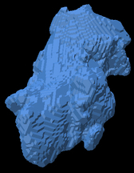 | 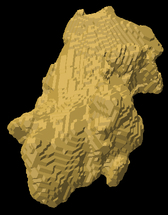 | 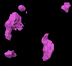 |
UCSF-PDGM-0307Astrocytoma, IDH-mutantalive | 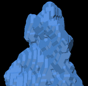 | 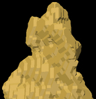 |
UCSF-PDGM-0305Astrocytoma, IDH-mutantalive | 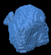 | 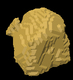 |
UCSF-PDGM-0304Astrocytoma, IDH-mutantalive | 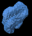 | 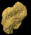 | 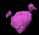 |
UCSF-PDGM-0300Astrocytoma, IDH-mutantalive | 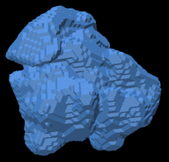 | 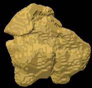 |
UCSF-PDGM-0298Astrocytoma, IDH-mutantalive |  | 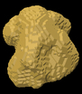 |
UCSF-PDGM-0290Astrocytoma, IDH-mutantalive | 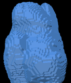 | 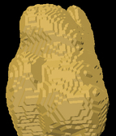 |  |
UCSF-PDGM-0286Astrocytoma, IDH-mutantalive | 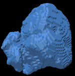 | 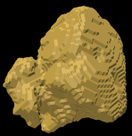 |
UCSF-PDGM-0285Astrocytoma, IDH-mutantalive | 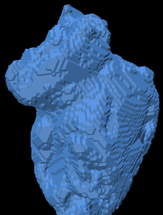 | 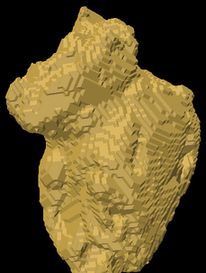 | 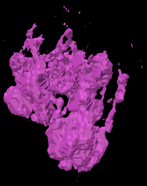 |
UCSF-PDGM-0303Astrocytoma, IDH-mutantalive | 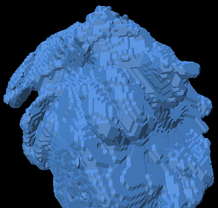 | 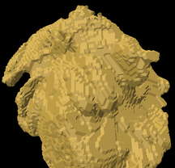 | 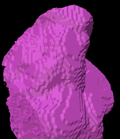 |
UCSF-PDGM-0324Astrocytoma, IDH-mutantalive | 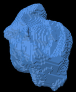 | 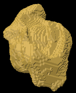 | 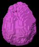 |
UCSF-PDGM-0326Astrocytoma, IDH-mutantalive | 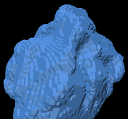 | 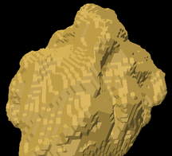 |
UCSF-PDGM-0367Astrocytoma, IDH-mutantalive |  | 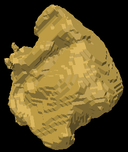 | 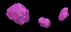 |
UCSF-PDGM-0331Astrocytoma, IDH-mutantalive | 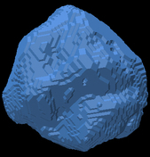 | 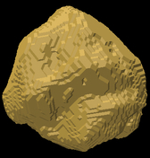 | 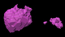 |
UCSF-PDGM-0282Astrocytoma, IDH-mutantalive | 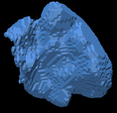 | 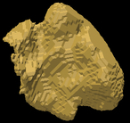 |  |
UCSF-PDGM-0248Astrocytoma, IDH-mutantalive | 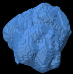 | 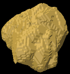 |
UCSF-PDGM-0246Astrocytoma, IDH-mutantalive | 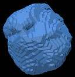 | 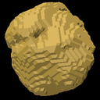 |
UCSF-PDGM-0245Astrocytoma, IDH-mutantalive | 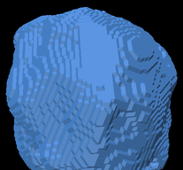 | 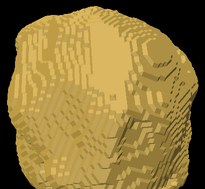 |
UCSF-PDGM-0242Astrocytoma, IDH-mutantalive | 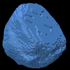 | 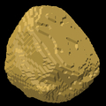 |
UCSF-PDGM-0241Astrocytoma, IDH-mutantalive | 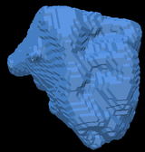 | 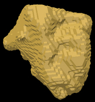 | 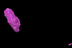 |
UCSF-PDGM-0240Astrocytoma, IDH-mutantalive | 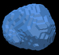 |  |
UCSF-PDGM-0238Astrocytoma, IDH-mutantalive | 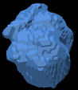 | 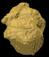 |
UCSF-PDGM-0237Astrocytoma, IDH-mutantalive |  | 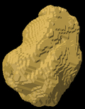 |
UCSF-PDGM-0235Astrocytoma, IDH-mutantalive | | |
UCSF-PDGM-0233Astrocytoma, IDH-mutantalive | | |
UCSF-PDGM-0231Astrocytoma, IDH-mutantalive | | |
UCSF-PDGM-0250Astrocytoma, IDH-mutantalive | | |
UCSF-PDGM-0251Astrocytoma, IDH-mutantalive | | |
UCSF-PDGM-0253Astrocytoma, IDH-mutantalive | | | |
UCSF-PDGM-0274Astrocytoma, IDH-mutantalive | |  |
UCSF-PDGM-0272Astrocytoma, IDH-mutantalive | | |
UCSF-PDGM-0266Astrocytoma, IDH-mutantalive |  | |
UCSF-PDGM-0264Astrocytoma, IDH-mutantalive | | |
UCSF-PDGM-0262Astrocytoma, IDH-mutantalive | | |
UCSF-PDGM-0261Astrocytoma, IDH-mutantalive | | |
UCSF-PDGM-0257Astrocytoma, IDH-mutantalive | | |
UCSF-PDGM-0256Astrocytoma, IDH-mutantalive | |  |
UCSF-PDGM-0255Astrocytoma, IDH-mutantalive | | |
UCSF-PDGM-0252Astrocytoma, IDH-mutantalive | | |
UCSF-PDGM-0499Astrocytoma, IDH-mutantalive | | | |
UCSF-PDGM-0490Astrocytoma, IDH-mutantalive | | |
UCSF-PDGM-0489Astrocytoma, IDH-mutantalive | | |
UCSF-PDGM-0485Astrocytoma, IDH-mutantalive | | |
UCSF-PDGM-0517Astrocytoma, IDH-mutantalive | | | |
UCSF-PDGM-0531Astrocytoma, IDH-mutantalive | | | |
UCSF-PDGM-0530Astrocytoma, IDH-mutantalive | | | |
UCSF-PDGM-0529Astrocytoma, IDH-mutantalive | | | |
UCSF-PDGM-0427Astrocytoma, IDH-mutantalive | | | |
UCSF-PDGM-0415Astrocytoma, IDH-mutantalive | |  | |
UCSF-PDGM-0407Astrocytoma, IDH-mutantalive | | | |
UCSF-PDGM-0478Astrocytoma, IDH-mutantalive | | |
UCSF-PDGM-0437Astrocytoma, IDH-mutantalive | | |
UCSF-PDGM-0439Astrocytoma, IDH-mutantalive | | |
UCSF-PDGM-0476Astrocytoma, IDH-mutantalive | | |
UCSF-PDGM-0475Astrocytoma, IDH-mutantalive | | |
UCSF-PDGM-0473Astrocytoma, IDH-mutantalive | | |
UCSF-PDGM-0469Astrocytoma, IDH-mutantalive | | |
UCSF-PDGM-0468Astrocytoma, IDH-mutantalive | | |
UCSF-PDGM-0460Astrocytoma, IDH-mutantalive | | | |
UCSF-PDGM-0446Astrocytoma, IDH-mutantalive | | |
UCSF-PDGM-0445Astrocytoma, IDH-mutantalive | | |
UCSF-PDGM-0444Astrocytoma, IDH-mutantalive | | |
UCSF-PDGM-0441Astrocytoma, IDH-mutantalive | | | |
UCSF-PDGM-0440Astrocytoma, IDH-mutantalive | | |
UCSF-PDGM-0438Astrocytoma, IDH-mutantalive | | |
UCSF-PDGM-0206Astrocytoma, IDH-mutantalive |  | | |
UCSF-PDGM-0108Astrocytoma, IDH-mutantalive | | | |
UCSF-PDGM-0045Astrocytoma, IDH-mutantalive | | |  |
UCSF-PDGM-0044Astrocytoma, IDH-mutantalive |  | | |
UCSF-PDGM-0156Astrocytoma, IDH-mutantalive | |  | |
UCSF-PDGM-0162Astrocytoma, IDH-mutantalive | | | |
UCSF-PDGM-0132Astrocytoma, IDH-mutantalive | | | |
UCSF-PDGM-0089Astrocytoma, IDH-mutantalive | | | |
UCSF-PDGM-0119Astrocytoma, IDH-mutantalive | | | |
UCSF-PDGM-0124Astrocytoma, IDH-mutantalive | | | |
UCSF-PDGM-0073Astrocytoma, IDH-mutantalive | | | |
UCSF-PDGM-0061Astrocytoma, IDH-mutantalive | | | |
UCSF-PDGM-0190Astrocytoma, IDH-mutantalive | | | |
UCSF-PDGM-0021Astrocytoma, IDH-mutantalive |  | | |
UCSF-PDGM-0501Astrocytoma, IDH-mutantdead | | | |
UCSF-PDGM-0432Astrocytoma, IDH-mutantdead | | | |
UCSF-PDGM-0474Astrocytoma, IDH-mutantdead | | | |
UCSF-PDGM-0482Astrocytoma, IDH-mutantdead | | |
UCSF-PDGM-0031Astrocytoma, IDH-mutantdead | | | |
UCSF-PDGM-0205Astrocytoma, IDH-mutantdead | | | |
UCSF-PDGM-0147Astrocytoma, IDH-mutantdead | | | |
UCSF-PDGM-0232Astrocytoma, IDH-mutantdead | | |
UCSF-PDGM-0259Astrocytoma, IDH-mutantdead | | |
UCSF-PDGM-0234Astrocytoma, IDH-mutantdead | | |
UCSF-PDGM-0174Astrocytoma, IDH-mutantdead | | | |
UCSF-PDGM-0357Astrocytoma, IDH-wildtypealive | | | |
UCSF-PDGM-0351Astrocytoma, IDH-wildtypealive | | |
UCSF-PDGM-0249Astrocytoma, IDH-wildtypealive | | |
UCSF-PDGM-0268Astrocytoma, IDH-wildtypealive | | |
UCSF-PDGM-0491Astrocytoma, IDH-wildtypealive | | | |
UCSF-PDGM-0486Astrocytoma, IDH-wildtypealive | | | |
UCSF-PDGM-0483Astrocytoma, IDH-wildtypealive | | |
UCSF-PDGM-0477Astrocytoma, IDH-wildtypealive | | |
UCSF-PDGM-0436Astrocytoma, IDH-wildtypealive | | |
UCSF-PDGM-0448Astrocytoma, IDH-wildtypealive | |  |
UCSF-PDGM-0443Astrocytoma, IDH-wildtypealive | | |  |
UCSF-PDGM-0500Astrocytoma, IDH-wildtypedead | | |
UCSF-PDGM-0442Astrocytoma, IDH-wildtypedead | | |
UCSF-PDGM-0465Astrocytoma, IDH-wildtypedead | | |
UCSF-PDGM-0449Astrocytoma, IDH-wildtypedead | | |
UCSF-PDGM-0456Astrocytoma, IDH-wildtypedead | | | |
UCSF-PDGM-0277Astrocytoma, IDH-wildtypedead | | |
UCSF-PDGM-0263Astrocytoma, IDH-wildtypedead | | |
UCSF-PDGM-0302Astrocytoma, IDH-wildtypedead | | |
UCSF-PDGM-0254Astrocytoma, IDH-wildtypedead | |  |
UCSF-PDGM-0365Astrocytoma, IDH-wildtypedead | | | |
UCSF-PDGM-0352Astrocytoma, IDH-wildtypedead | | |
UCSF-PDGM-0327Astrocytoma, IDH-wildtypedead | | |
UCSF-PDGM-0349Astrocytoma, IDH-wildtypedead | | |
UCSF-PDGM-0283Glioblastoma, IDH-wildtypealive | | | |
UCSF-PDGM-0319Glioblastoma, IDH-wildtypealive | | | |
UCSF-PDGM-0318Glioblastoma, IDH-wildtypealive | | | |
UCSF-PDGM-0317Glioblastoma, IDH-wildtypealive | | | |
UCSF-PDGM-0313Glioblastoma, IDH-wildtypealive | | | |
UCSF-PDGM-0311Glioblastoma, IDH-wildtypealive | | | |
UCSF-PDGM-0320Glioblastoma, IDH-wildtypealive | | | |
UCSF-PDGM-0284Glioblastoma, IDH-wildtypealive | | | |
UCSF-PDGM-0539Glioblastoma, IDH-wildtypealive | | | |
UCSF-PDGM-0321Glioblastoma, IDH-wildtypealive | | | |
UCSF-PDGM-0387Glioblastoma, IDH-wildtypealive | | | |
UCSF-PDGM-0381Glioblastoma, IDH-wildtypealive | | | |
UCSF-PDGM-0380Glioblastoma, IDH-wildtypealive | | | |
UCSF-PDGM-0375Glioblastoma, IDH-wildtypealive | | | |
UCSF-PDGM-0374Glioblastoma, IDH-wildtypealive | | | |
UCSF-PDGM-0366Glioblastoma, IDH-wildtypealive |  | | |
UCSF-PDGM-0364Glioblastoma, IDH-wildtypealive | | | |
UCSF-PDGM-0360Glioblastoma, IDH-wildtypealive | | | |
UCSF-PDGM-0355Glioblastoma, IDH-wildtypealive | | | |
UCSF-PDGM-0347Glioblastoma, IDH-wildtypealive | | | |
UCSF-PDGM-0340Glioblastoma, IDH-wildtypealive | | | |
UCSF-PDGM-0339Glioblastoma, IDH-wildtypealive | | | |
UCSF-PDGM-0337Glioblastoma, IDH-wildtypealive | | | |
UCSF-PDGM-0329Glioblastoma, IDH-wildtypealive | |  | |
UCSF-PDGM-0328Glioblastoma, IDH-wildtypealive | | | |
UCSF-PDGM-0280Glioblastoma, IDH-wildtypealive | | | |
UCSF-PDGM-0279Glioblastoma, IDH-wildtypealive | |  | |
UCSF-PDGM-0223Glioblastoma, IDH-wildtypealive | | | |
UCSF-PDGM-0215Glioblastoma, IDH-wildtypealive | |  | |
UCSF-PDGM-0390Glioblastoma, IDH-wildtypealive | | | |
UCSF-PDGM-0276Glioblastoma, IDH-wildtypealive | |  | |
UCSF-PDGM-0273Glioblastoma, IDH-wildtypealive |  | | |
UCSF-PDGM-0270Glioblastoma, IDH-wildtypealive | | | |
UCSF-PDGM-0391Glioblastoma, IDH-wildtypealive | | | |
UCSF-PDGM-0392Glioblastoma, IDH-wildtypealive | | | |
UCSF-PDGM-0393Glioblastoma, IDH-wildtypealive | | | |
UCSF-PDGM-0510Glioblastoma, IDH-wildtypealive | | | |
UCSF-PDGM-0509Glioblastoma, IDH-wildtypealive | | | |
UCSF-PDGM-0508Glioblastoma, IDH-wildtypealive | | | |
UCSF-PDGM-0507Glioblastoma, IDH-wildtypealive | | | |
UCSF-PDGM-0505Glioblastoma, IDH-wildtypealive | | | |
UCSF-PDGM-0504Glioblastoma, IDH-wildtypealive | | | |
UCSF-PDGM-0503Glioblastoma, IDH-wildtypealive | | | |
UCSF-PDGM-0498Glioblastoma, IDH-wildtypealive | | | |
UCSF-PDGM-0497Glioblastoma, IDH-wildtypealive | | | |
UCSF-PDGM-0496Glioblastoma, IDH-wildtypealive |  | | |
UCSF-PDGM-0493Glioblastoma, IDH-wildtypealive | | | |
UCSF-PDGM-0492Glioblastoma, IDH-wildtypealive | | | |
UCSF-PDGM-0488Glioblastoma, IDH-wildtypealive | | | |
UCSF-PDGM-0511Glioblastoma, IDH-wildtypealive | | | |
UCSF-PDGM-0514Glioblastoma, IDH-wildtypealive | | | |
UCSF-PDGM-0538Glioblastoma, IDH-wildtypealive | | | |
UCSF-PDGM-0537Glioblastoma, IDH-wildtypealive | | | |
UCSF-PDGM-0536Glioblastoma, IDH-wildtypealive | | | |
UCSF-PDGM-0534Glioblastoma, IDH-wildtypealive | | | |
UCSF-PDGM-0533Glioblastoma, IDH-wildtypealive | | | |
UCSF-PDGM-0527Glioblastoma, IDH-wildtypealive | | | |
UCSF-PDGM-0526Glioblastoma, IDH-wildtypealive | | | |
UCSF-PDGM-0525Glioblastoma, IDH-wildtypealive | | | |
UCSF-PDGM-0524Glioblastoma, IDH-wildtypealive | | | |
UCSF-PDGM-0523Glioblastoma, IDH-wildtypealive | | | |
UCSF-PDGM-0522Glioblastoma, IDH-wildtypealive | | | |
UCSF-PDGM-0521Glioblastoma, IDH-wildtypealive | |  | |
UCSF-PDGM-0520Glioblastoma, IDH-wildtypealive | | | |
UCSF-PDGM-0519Glioblastoma, IDH-wildtypealive | |  | |
UCSF-PDGM-0518Glioblastoma, IDH-wildtypealive | | | |
UCSF-PDGM-0516Glioblastoma, IDH-wildtypealive | | | |
UCSF-PDGM-0214Glioblastoma, IDH-wildtypealive | | | |
UCSF-PDGM-0481Glioblastoma, IDH-wildtypealive | | | |
UCSF-PDGM-0431Glioblastoma, IDH-wildtypealive | | | |
UCSF-PDGM-0426Glioblastoma, IDH-wildtypealive | | | |
UCSF-PDGM-0424Glioblastoma, IDH-wildtypealive | | | |
UCSF-PDGM-0423Glioblastoma, IDH-wildtypealive | | | |
UCSF-PDGM-0421Glioblastoma, IDH-wildtypealive | | | |
UCSF-PDGM-0420Glioblastoma, IDH-wildtypealive | | | |
UCSF-PDGM-0419Glioblastoma, IDH-wildtypealive | | | |
UCSF-PDGM-0414Glioblastoma, IDH-wildtypealive | | | |
UCSF-PDGM-0411Glioblastoma, IDH-wildtypealive | | | |
UCSF-PDGM-0409Glioblastoma, IDH-wildtypealive | | | |
UCSF-PDGM-0405Glioblastoma, IDH-wildtypealive | | | |
UCSF-PDGM-0404Glioblastoma, IDH-wildtypealive | | |  |
UCSF-PDGM-0403Glioblastoma, IDH-wildtypealive | | | |
UCSF-PDGM-0400Glioblastoma, IDH-wildtypealive | | | |
UCSF-PDGM-0399Glioblastoma, IDH-wildtypealive |  | | |
UCSF-PDGM-0394Glioblastoma, IDH-wildtypealive | | | |
UCSF-PDGM-0464Glioblastoma, IDH-wildtypealive | | | |
UCSF-PDGM-0463Glioblastoma, IDH-wildtypealive | | | |
UCSF-PDGM-0461Glioblastoma, IDH-wildtypealive | | | |
UCSF-PDGM-0459Glioblastoma, IDH-wildtypealive |  | | |
UCSF-PDGM-0454Glioblastoma, IDH-wildtypealive | | | |
UCSF-PDGM-0451Glioblastoma, IDH-wildtypealive | | | |
UCSF-PDGM-0066Glioblastoma, IDH-wildtypealive | | | |
UCSF-PDGM-0103Glioblastoma, IDH-wildtypealive | | | |
UCSF-PDGM-0059Glioblastoma, IDH-wildtypealive | |  | |
UCSF-PDGM-0058Glioblastoma, IDH-wildtypealive | | | |
UCSF-PDGM-0057Glioblastoma, IDH-wildtypealive | | | |
UCSF-PDGM-0055Glioblastoma, IDH-wildtypealive | | | |
UCSF-PDGM-0053Glioblastoma, IDH-wildtypealive | | | |
UCSF-PDGM-0146Glioblastoma, IDH-wildtypealive | | | |
UCSF-PDGM-0134Glioblastoma, IDH-wildtypealive | | |  |
UCSF-PDGM-0049Glioblastoma, IDH-wildtypealive | | |  |
UCSF-PDGM-0157Glioblastoma, IDH-wildtypealive | | | |
UCSF-PDGM-0041Glioblastoma, IDH-wildtypealive | | | |
UCSF-PDGM-0039Glioblastoma, IDH-wildtypealive | | | |
UCSF-PDGM-0037Glioblastoma, IDH-wildtypealive | | | |
UCSF-PDGM-0047Glioblastoma, IDH-wildtypealive | | |  |
UCSF-PDGM-0131Glioblastoma, IDH-wildtypealive | | | |
UCSF-PDGM-0130Glioblastoma, IDH-wildtypealive | | | |
UCSF-PDGM-0107Glioblastoma, IDH-wildtypealive | | | |
UCSF-PDGM-0204Glioblastoma, IDH-wildtypealive | | | |
UCSF-PDGM-0094Glioblastoma, IDH-wildtypealive | | | |
UCSF-PDGM-0088Glioblastoma, IDH-wildtypealive | | | |
UCSF-PDGM-0086Glioblastoma, IDH-wildtypealive | | | |
UCSF-PDGM-0085Glioblastoma, IDH-wildtypealive | | | |
UCSF-PDGM-0116Glioblastoma, IDH-wildtypealive |  | | |
UCSF-PDGM-0084Glioblastoma, IDH-wildtypealive | | | |
UCSF-PDGM-0082Glioblastoma, IDH-wildtypealive | | | |
UCSF-PDGM-0076Glioblastoma, IDH-wildtypealive | | | |
UCSF-PDGM-0074Glioblastoma, IDH-wildtypealive | | | |
UCSF-PDGM-0123Glioblastoma, IDH-wildtypealive | | | |
UCSF-PDGM-0072Glioblastoma, IDH-wildtypealive | | | |
UCSF-PDGM-0127Glioblastoma, IDH-wildtypealive | | | |
UCSF-PDGM-0128Glioblastoma, IDH-wildtypealive | | |  |
UCSF-PDGM-0167Glioblastoma, IDH-wildtypealive | | | |
UCSF-PDGM-0036Glioblastoma, IDH-wildtypealive | | | |
UCSF-PDGM-0034Glioblastoma, IDH-wildtypealive | | | |
UCSF-PDGM-0185Glioblastoma, IDH-wildtypealive | | | |
UCSF-PDGM-0026Glioblastoma, IDH-wildtypealive | | | |
UCSF-PDGM-0189Glioblastoma, IDH-wildtypealive | |  | |
UCSF-PDGM-0195Glioblastoma, IDH-wildtypealive | | |  |
UCSF-PDGM-0183Glioblastoma, IDH-wildtypealive | | | |
UCSF-PDGM-0020Glioblastoma, IDH-wildtypealive | | | |
UCSF-PDGM-0016Glioblastoma, IDH-wildtypealive | | | |
UCSF-PDGM-0012Glioblastoma, IDH-wildtypealive | | | |
UCSF-PDGM-0201Glioblastoma, IDH-wildtypealive | | | |
UCSF-PDGM-0011Glioblastoma, IDH-wildtypealive | | | |
UCSF-PDGM-0010Glioblastoma, IDH-wildtypealive | | | |
UCSF-PDGM-0203Glioblastoma, IDH-wildtypealive | | | |
UCSF-PDGM-0018Glioblastoma, IDH-wildtypealive | | | |
UCSF-PDGM-0102Glioblastoma, IDH-wildtypealive | | |  |
UCSF-PDGM-0179Glioblastoma, IDH-wildtypealive | | | |
UCSF-PDGM-0032Glioblastoma, IDH-wildtypealive | | |  |
UCSF-PDGM-0030Glioblastoma, IDH-wildtypealive | | | |
UCSF-PDGM-0422Glioblastoma, IDH-wildtypedead | | | |
UCSF-PDGM-0506Glioblastoma, IDH-wildtypedead | | | |
UCSF-PDGM-0425Glioblastoma, IDH-wildtypedead | | | |
UCSF-PDGM-0532Glioblastoma, IDH-wildtypedead | | | |
UCSF-PDGM-0083Glioblastoma, IDH-wildtypedead | | | |
UCSF-PDGM-0428Glioblastoma, IDH-wildtypedead | | | |
UCSF-PDGM-0429Glioblastoma, IDH-wildtypedead | | | |
UCSF-PDGM-0033Glioblastoma, IDH-wildtypedead |  | | |
UCSF-PDGM-0430Glioblastoma, IDH-wildtypedead | | | |
UCSF-PDGM-0013Glioblastoma, IDH-wildtypedead | | |  |
UCSF-PDGM-0433Glioblastoma, IDH-wildtypedead | | | |
UCSF-PDGM-0434Glioblastoma, IDH-wildtypedead | | | |
UCSF-PDGM-0435Glioblastoma, IDH-wildtypedead | | | |
UCSF-PDGM-0080Glioblastoma, IDH-wildtypedead | | | |
UCSF-PDGM-0079Glioblastoma, IDH-wildtypedead | | | |
UCSF-PDGM-0078Glioblastoma, IDH-wildtypedead | | | |
UCSF-PDGM-0077Glioblastoma, IDH-wildtypedead | | | |
UCSF-PDGM-0014Glioblastoma, IDH-wildtypedead |  | | |
UCSF-PDGM-0075Glioblastoma, IDH-wildtypedead | |  | |
UCSF-PDGM-0087Glioblastoma, IDH-wildtypedead | | | |
UCSF-PDGM-0009Glioblastoma, IDH-wildtypedead | | |  |
UCSF-PDGM-0513Glioblastoma, IDH-wildtypedead | | | |
UCSF-PDGM-0418Glioblastoma, IDH-wildtypedead | | | |
UCSF-PDGM-0395Glioblastoma, IDH-wildtypedead | | | |
UCSF-PDGM-0396Glioblastoma, IDH-wildtypedead | | | |
UCSF-PDGM-0397Glioblastoma, IDH-wildtypedead |  | | |
UCSF-PDGM-0398Glioblastoma, IDH-wildtypedead | | | |
UCSF-PDGM-0101Glioblastoma, IDH-wildtypedead | | | |
UCSF-PDGM-0502Glioblastoma, IDH-wildtypedead | | | |
UCSF-PDGM-0099Glioblastoma, IDH-wildtypedead | | | |
UCSF-PDGM-0401Glioblastoma, IDH-wildtypedead | | | |
UCSF-PDGM-0402Glioblastoma, IDH-wildtypedead | | | |
UCSF-PDGM-0097Glioblastoma, IDH-wildtypedead |  | | |
UCSF-PDGM-0096Glioblastoma, IDH-wildtypedead | | | |
UCSF-PDGM-0005Glioblastoma, IDH-wildtypedead | | | |
UCSF-PDGM-0406Glioblastoma, IDH-wildtypedead | | | |
UCSF-PDGM-0007Glioblastoma, IDH-wildtypedead | | | |
UCSF-PDGM-0093Glioblastoma, IDH-wildtypedead | | | |
UCSF-PDGM-0410Glioblastoma, IDH-wildtypedead | | | |
UCSF-PDGM-0092Glioblastoma, IDH-wildtypedead | | | |
UCSF-PDGM-0412Glioblastoma, IDH-wildtypedead | | | |
UCSF-PDGM-0413Glioblastoma, IDH-wildtypedead |  | | |
UCSF-PDGM-0091Glioblastoma, IDH-wildtypedead | | | |
UCSF-PDGM-0090Glioblastoma, IDH-wildtypedead | | | |
UCSF-PDGM-0416Glioblastoma, IDH-wildtypedead | | | |
UCSF-PDGM-0417Glioblastoma, IDH-wildtypedead | | | |
UCSF-PDGM-0095Glioblastoma, IDH-wildtypedead | | | |
UCSF-PDGM-0008Glioblastoma, IDH-wildtypedead | | | |
UCSF-PDGM-0015Glioblastoma, IDH-wildtypedead | | | |
UCSF-PDGM-0038Glioblastoma, IDH-wildtypedead | | | |
UCSF-PDGM-0466Glioblastoma, IDH-wildtypedead | | | |
UCSF-PDGM-0467Glioblastoma, IDH-wildtypedead | | | |
UCSF-PDGM-0024Glioblastoma, IDH-wildtypedead | | |  |
UCSF-PDGM-0470Glioblastoma, IDH-wildtypedead |  | | |
UCSF-PDGM-0471Glioblastoma, IDH-wildtypedead | | | |
UCSF-PDGM-0472Glioblastoma, IDH-wildtypedead | | | |
UCSF-PDGM-0025Glioblastoma, IDH-wildtypedead | | | |
UCSF-PDGM-0042Glioblastoma, IDH-wildtypedead | | | |
UCSF-PDGM-0056Glioblastoma, IDH-wildtypedead | | | |
UCSF-PDGM-0029Glioblastoma, IDH-wildtypedead |  | | |
UCSF-PDGM-0515Glioblastoma, IDH-wildtypedead | | | |
UCSF-PDGM-0479Glioblastoma, IDH-wildtypedead | | | |
UCSF-PDGM-0043Glioblastoma, IDH-wildtypedead | | | |
UCSF-PDGM-0480Glioblastoma, IDH-wildtypedead | | | |
UCSF-PDGM-0050Glioblastoma, IDH-wildtypedead | | | |
UCSF-PDGM-0027Glioblastoma, IDH-wildtypedead | | | |
UCSF-PDGM-0484Glioblastoma, IDH-wildtypedead | | | |
UCSF-PDGM-0048Glioblastoma, IDH-wildtypedead | | | |
UCSF-PDGM-0512Glioblastoma, IDH-wildtypedead | | | |
UCSF-PDGM-0487Glioblastoma, IDH-wildtypedead | | | |
UCSF-PDGM-0046Glioblastoma, IDH-wildtypedead | | | |
UCSF-PDGM-0528Glioblastoma, IDH-wildtypedead | | |  |
UCSF-PDGM-0063Glioblastoma, IDH-wildtypedead | | | |
UCSF-PDGM-0462Glioblastoma, IDH-wildtypedead | | | |
UCSF-PDGM-0017Glioblastoma, IDH-wildtypedead | | | |
UCSF-PDGM-0071Glioblastoma, IDH-wildtypedead | | | |
UCSF-PDGM-0447Glioblastoma, IDH-wildtypedead | | | |
UCSF-PDGM-0070Glioblastoma, IDH-wildtypedead | | | |
UCSF-PDGM-0450Glioblastoma, IDH-wildtypedead |  | | |
UCSF-PDGM-0035Glioblastoma, IDH-wildtypedead | | | |
UCSF-PDGM-0069Glioblastoma, IDH-wildtypedead | | | |
UCSF-PDGM-0452Glioblastoma, IDH-wildtypedead | | |  |
UCSF-PDGM-0453Glioblastoma, IDH-wildtypedead | | |  |
UCSF-PDGM-0040Glioblastoma, IDH-wildtypedead | | | |
UCSF-PDGM-0068Glioblastoma, IDH-wildtypedead | | | |
UCSF-PDGM-0495Glioblastoma, IDH-wildtypedead | | | |
UCSF-PDGM-0455Glioblastoma, IDH-wildtypedead | | | |
UCSF-PDGM-0022Glioblastoma, IDH-wildtypedead | |  | |
UCSF-PDGM-0023Glioblastoma, IDH-wildtypedead | | | |
UCSF-PDGM-0457Glioblastoma, IDH-wildtypedead | |  | |
UCSF-PDGM-0458Glioblastoma, IDH-wildtypedead | | | |
UCSF-PDGM-0067Glioblastoma, IDH-wildtypedead | | | |
UCSF-PDGM-0494Glioblastoma, IDH-wildtypedead | | | |
UCSF-PDGM-0065Glioblastoma, IDH-wildtypedead | | | |
UCSF-PDGM-0064Glioblastoma, IDH-wildtypedead | | | |
UCSF-PDGM-0019Glioblastoma, IDH-wildtypedead | | | |
UCSF-PDGM-0105Glioblastoma, IDH-wildtypedead | | | |
UCSF-PDGM-0154Glioblastoma, IDH-wildtypedead | | | |
UCSF-PDGM-0155Glioblastoma, IDH-wildtypedead | | | |
UCSF-PDGM-0275Glioblastoma, IDH-wildtypedead | | | |
UCSF-PDGM-0158Glioblastoma, IDH-wildtypedead | | | |
UCSF-PDGM-0159Glioblastoma, IDH-wildtypedead | | | |
UCSF-PDGM-0153Glioblastoma, IDH-wildtypedead |  | | |
UCSF-PDGM-0160Glioblastoma, IDH-wildtypedead | | | |
UCSF-PDGM-0163Glioblastoma, IDH-wildtypedead | | | |
UCSF-PDGM-0164Glioblastoma, IDH-wildtypedead | | | |
UCSF-PDGM-0165Glioblastoma, IDH-wildtypedead | | | |
UCSF-PDGM-0166Glioblastoma, IDH-wildtypedead | | | |
UCSF-PDGM-0168Glioblastoma, IDH-wildtypedead | | | |
UCSF-PDGM-0161Glioblastoma, IDH-wildtypedead | | | |
UCSF-PDGM-0169Glioblastoma, IDH-wildtypedead | | | |
UCSF-PDGM-0152Glioblastoma, IDH-wildtypedead | | | |
UCSF-PDGM-0150Glioblastoma, IDH-wildtypedead | | | |
UCSF-PDGM-0142Glioblastoma, IDH-wildtypedead | | | |
UCSF-PDGM-0143Glioblastoma, IDH-wildtypedead | | | |
UCSF-PDGM-0144Glioblastoma, IDH-wildtypedead | | | |
UCSF-PDGM-0145Glioblastoma, IDH-wildtypedead | | | |
UCSF-PDGM-0297Glioblastoma, IDH-wildtypedead | | | |
UCSF-PDGM-0151Glioblastoma, IDH-wildtypedead | | | |
UCSF-PDGM-0296Glioblastoma, IDH-wildtypedead | | | |
UCSF-PDGM-0291Glioblastoma, IDH-wildtypedead | | | |
UCSF-PDGM-0288Glioblastoma, IDH-wildtypedead | | | |
UCSF-PDGM-0287Glioblastoma, IDH-wildtypedead | | | |
UCSF-PDGM-0148Glioblastoma, IDH-wildtypedead | | | |
UCSF-PDGM-0149Glioblastoma, IDH-wildtypedead | | | |
UCSF-PDGM-0295Glioblastoma, IDH-wildtypedead |  | | |
UCSF-PDGM-0141Glioblastoma, IDH-wildtypedead | |  | |
UCSF-PDGM-0170Glioblastoma, IDH-wildtypedead | | | |
UCSF-PDGM-0172Glioblastoma, IDH-wildtypedead | | | |
UCSF-PDGM-0198Glioblastoma, IDH-wildtypedead | | | |
UCSF-PDGM-0229Glioblastoma, IDH-wildtypedead | | | |
UCSF-PDGM-0228Glioblastoma, IDH-wildtypedead | | | |
UCSF-PDGM-0227Glioblastoma, IDH-wildtypedead | | | |
UCSF-PDGM-0225Glioblastoma, IDH-wildtypedead | | | |
UCSF-PDGM-0197Glioblastoma, IDH-wildtypedead |  | | |
UCSF-PDGM-0200Glioblastoma, IDH-wildtypedead | | | |
UCSF-PDGM-0213Glioblastoma, IDH-wildtypedead | | | |
UCSF-PDGM-0212Glioblastoma, IDH-wildtypedead | | | |
UCSF-PDGM-0210Glioblastoma, IDH-wildtypedead | | | |
UCSF-PDGM-0209Glioblastoma, IDH-wildtypedead | | | |
UCSF-PDGM-0208Glioblastoma, IDH-wildtypedead | | | |
UCSF-PDGM-0207Glioblastoma, IDH-wildtypedead | | | |
UCSF-PDGM-0202Glioblastoma, IDH-wildtypedead | | | |
UCSF-PDGM-0194Glioblastoma, IDH-wildtypedead | | | |
UCSF-PDGM-0173Glioblastoma, IDH-wildtypedead | | | |
UCSF-PDGM-0176Glioblastoma, IDH-wildtypedead | | | |
UCSF-PDGM-0178Glioblastoma, IDH-wildtypedead | | | |
UCSF-PDGM-0196Glioblastoma, IDH-wildtypedead | | | |
UCSF-PDGM-0180Glioblastoma, IDH-wildtypedead | | | |
UCSF-PDGM-0184Glioblastoma, IDH-wildtypedead | | | |
UCSF-PDGM-0186Glioblastoma, IDH-wildtypedead | | | |
UCSF-PDGM-0187Glioblastoma, IDH-wildtypedead | | | |
UCSF-PDGM-0188Glioblastoma, IDH-wildtypedead | | | |
UCSF-PDGM-0191Glioblastoma, IDH-wildtypedead | | | |
UCSF-PDGM-0193Glioblastoma, IDH-wildtypedead | | |  |
UCSF-PDGM-0182Glioblastoma, IDH-wildtypedead | | | |
UCSF-PDGM-0306Glioblastoma, IDH-wildtypedead | | | |
UCSF-PDGM-0140Glioblastoma, IDH-wildtypedead | | | |
UCSF-PDGM-0139Glioblastoma, IDH-wildtypedead | | | |
UCSF-PDGM-0370Glioblastoma, IDH-wildtypedead | | | |
UCSF-PDGM-0369Glioblastoma, IDH-wildtypedead | | |  |
UCSF-PDGM-0368Glioblastoma, IDH-wildtypedead | | | |
UCSF-PDGM-0113Glioblastoma, IDH-wildtypedead |  |  | |
UCSF-PDGM-0114Glioblastoma, IDH-wildtypedead |  | | |
UCSF-PDGM-0371Glioblastoma, IDH-wildtypedead |  | | |
UCSF-PDGM-0115Glioblastoma, IDH-wildtypedead | | | |
UCSF-PDGM-0362Glioblastoma, IDH-wildtypedead | | | |
UCSF-PDGM-0361Glioblastoma, IDH-wildtypedead | | | |
UCSF-PDGM-0359Glioblastoma, IDH-wildtypedead | | | |
UCSF-PDGM-0358Glioblastoma, IDH-wildtypedead | | | |
UCSF-PDGM-0118Glioblastoma, IDH-wildtypedead | | | |
UCSF-PDGM-0356Glioblastoma, IDH-wildtypedead | | | |
UCSF-PDGM-0363Glioblastoma, IDH-wildtypedead | | | |
UCSF-PDGM-0354Glioblastoma, IDH-wildtypedead | | |  |
UCSF-PDGM-0372Glioblastoma, IDH-wildtypedead | |  | |
UCSF-PDGM-0112Glioblastoma, IDH-wildtypedead | | | |
UCSF-PDGM-0106Glioblastoma, IDH-wildtypedead | | | |
UCSF-PDGM-0389Glioblastoma, IDH-wildtypedead | | | |
UCSF-PDGM-0388Glioblastoma, IDH-wildtypedead | | |  |
UCSF-PDGM-0386Glioblastoma, IDH-wildtypedead | | | |
UCSF-PDGM-0385Glioblastoma, IDH-wildtypedead | | | |
UCSF-PDGM-0384Glioblastoma, IDH-wildtypedead | | |  |
UCSF-PDGM-0373Glioblastoma, IDH-wildtypedead | | | |
UCSF-PDGM-0383Glioblastoma, IDH-wildtypedead | |  | |
UCSF-PDGM-0109Glioblastoma, IDH-wildtypedead | | | |
UCSF-PDGM-0379Glioblastoma, IDH-wildtypedead | |  | |
UCSF-PDGM-0378Glioblastoma, IDH-wildtypedead | | | |
UCSF-PDGM-0377Glioblastoma, IDH-wildtypedead | | | |
UCSF-PDGM-0376Glioblastoma, IDH-wildtypedead | | | |
UCSF-PDGM-0111Glioblastoma, IDH-wildtypedead | | | |
UCSF-PDGM-0382Glioblastoma, IDH-wildtypedead | | | |
UCSF-PDGM-0353Glioblastoma, IDH-wildtypedead | | | |
UCSF-PDGM-0121Glioblastoma, IDH-wildtypedead | | | |
UCSF-PDGM-0325Glioblastoma, IDH-wildtypedead | | | |
UCSF-PDGM-0323Glioblastoma, IDH-wildtypedead |  | | |
UCSF-PDGM-0133Glioblastoma, IDH-wildtypedead | | | |
UCSF-PDGM-0135Glioblastoma, IDH-wildtypedead | | | |
UCSF-PDGM-0136Glioblastoma, IDH-wildtypedead | | |  |
UCSF-PDGM-0129Glioblastoma, IDH-wildtypedead | | | |
UCSF-PDGM-0316Glioblastoma, IDH-wildtypedead | | | |
UCSF-PDGM-0314Glioblastoma, IDH-wildtypedead | | | |
UCSF-PDGM-0137Glioblastoma, IDH-wildtypedead | | | |
UCSF-PDGM-0312Glioblastoma, IDH-wildtypedead | | | |
UCSF-PDGM-0310Glioblastoma, IDH-wildtypedead | | | |
UCSF-PDGM-0309Glioblastoma, IDH-wildtypedead | | | |
UCSF-PDGM-0330Glioblastoma, IDH-wildtypedead | | | |
UCSF-PDGM-0332Glioblastoma, IDH-wildtypedead | | | |
UCSF-PDGM-0333Glioblastoma, IDH-wildtypedead | | | |
UCSF-PDGM-0350Glioblastoma, IDH-wildtypedead | | | |
UCSF-PDGM-0348Glioblastoma, IDH-wildtypedead | | | |
UCSF-PDGM-0122Glioblastoma, IDH-wildtypedead | | | |
UCSF-PDGM-0346Glioblastoma, IDH-wildtypedead |  |  | |
UCSF-PDGM-0345Glioblastoma, IDH-wildtypedead | | | |
UCSF-PDGM-0344Glioblastoma, IDH-wildtypedead | | | |
UCSF-PDGM-0343Glioblastoma, IDH-wildtypedead | | | |
UCSF-PDGM-0342Glioblastoma, IDH-wildtypedead | | | |
UCSF-PDGM-0341Glioblastoma, IDH-wildtypedead | | | |
UCSF-PDGM-0338Glioblastoma, IDH-wildtypedead | | | |
UCSF-PDGM-0126Glioblastoma, IDH-wildtypedead | | | |
UCSF-PDGM-0336Glioblastoma, IDH-wildtypedead | | | |
UCSF-PDGM-0335Glioblastoma, IDH-wildtypedead | | |  |
UCSF-PDGM-0334Glioblastoma, IDH-wildtypedead | | | |
UCSF-PDGM-0104Glioblastoma, IDH-wildtypedead | | | |
UCSF-PDGM-0004Glioblastoma, IDH-wildtypedead | | | |
UCSF-PDGM-0281Oligodendroglioma, IDH-mutant, 1p/19q-codeletedalive | | |
UCSF-PDGM-0247Oligodendroglioma, IDH-mutant, 1p/19q-codeletedalive |  | |
UCSF-PDGM-0244Oligodendroglioma, IDH-mutant, 1p/19q-codeletedalive | | | |
UCSF-PDGM-0243Oligodendroglioma, IDH-mutant, 1p/19q-codeletedalive | | | |
UCSF-PDGM-0239Oligodendroglioma, IDH-mutant, 1p/19q-codeletedalive | | |
UCSF-PDGM-0236Oligodendroglioma, IDH-mutant, 1p/19q-codeletedalive | | |
UCSF-PDGM-0269Oligodendroglioma, IDH-mutant, 1p/19q-codeletedalive | | |
UCSF-PDGM-0267Oligodendroglioma, IDH-mutant, 1p/19q-codeletedalive | | |
UCSF-PDGM-0265Oligodendroglioma, IDH-mutant, 1p/19q-codeletedalive | | |
UCSF-PDGM-0260Oligodendroglioma, IDH-mutant, 1p/19q-codeletedalive | | | |
UCSF-PDGM-0258Oligodendroglioma, IDH-mutant, 1p/19q-codeletedalive | | |  |
UCSF-PDGM-0535Oligodendroglioma, IDH-mutant, 1p/19q-codeletedalive | | |
UCSF-PDGM-0540Oligodendroglioma, IDH-mutant, 1p/19q-codeletedalive | | |